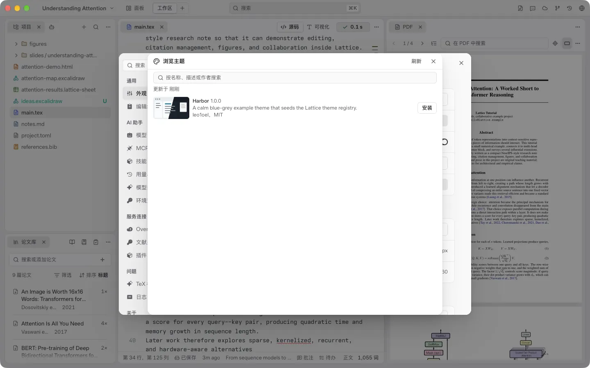
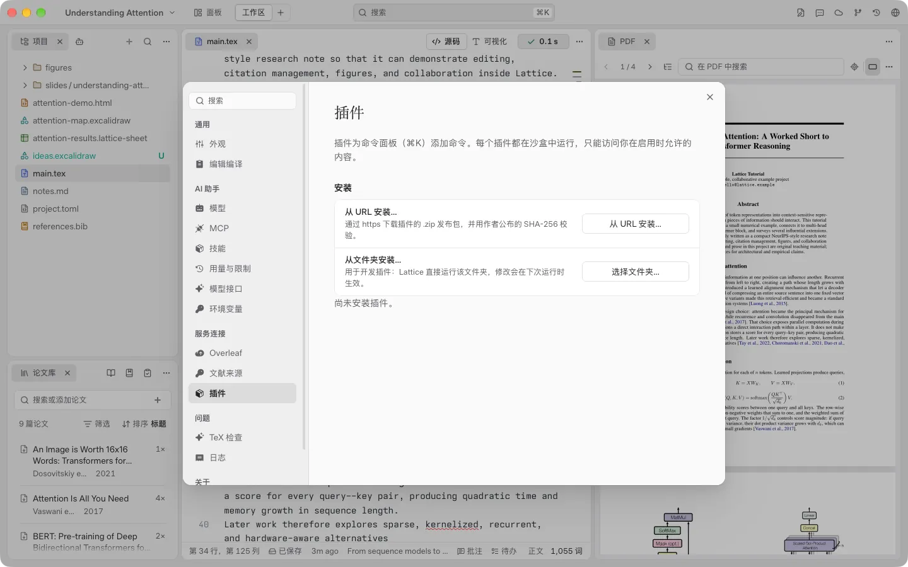

插件与主题
主题
打开 设置 › 外观。在 主题 下可以选择内置的浅色或深色主题，或者：
- 浏览主题…：别人发布的主题。点某个主题的 安装，再从你的主题中选中它。
- 从文件安装…：别人发给你的主题文件。
- 显示主题文件夹：已安装的主题文件所在的位置。

编辑器的语法配色在同一页的 代码主题 中单独设置。
插件
插件会往命令面板（⌘K）里添加命令。每个插件都在沙盒中运行，只能访问你开启时允许的内容。
打开 设置 › 插件：
- 从 URL 安装…：通过
https下载插件的.zip发布包，并核对作者公布的 SHA-256。 - 从文件夹安装…：用于开发插件；Lattice 直接运行这个文件夹，你的修改在下次运行时生效。

新装的插件默认关闭。打开时会列出它申请的权限；如果更新后申请了更多权限，Lattice 会再次询问。在同一页可以移除插件。插件目前只能在 macOS 上运行。
想写插件？见 插件开发文档（英文）。